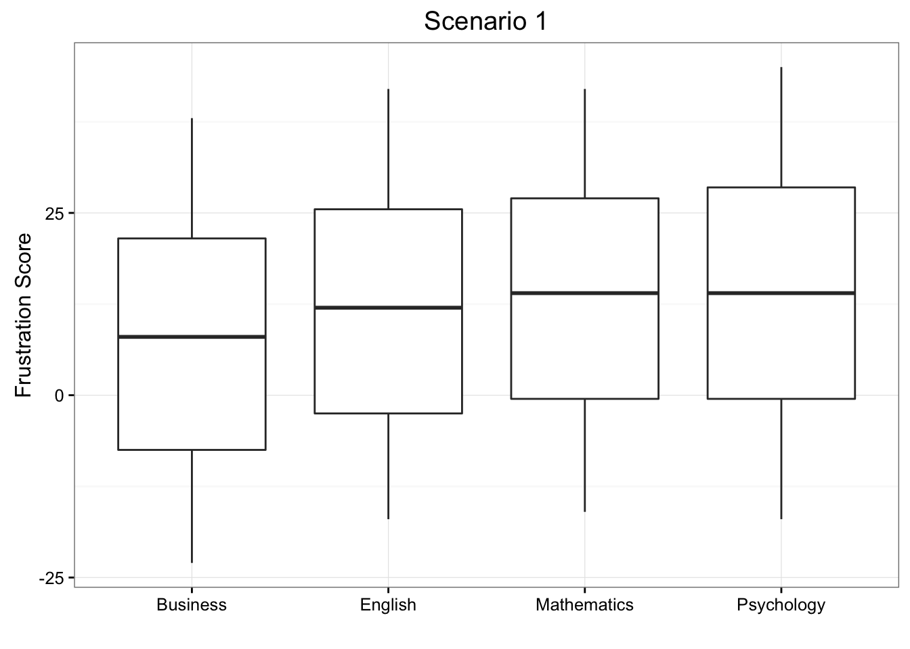
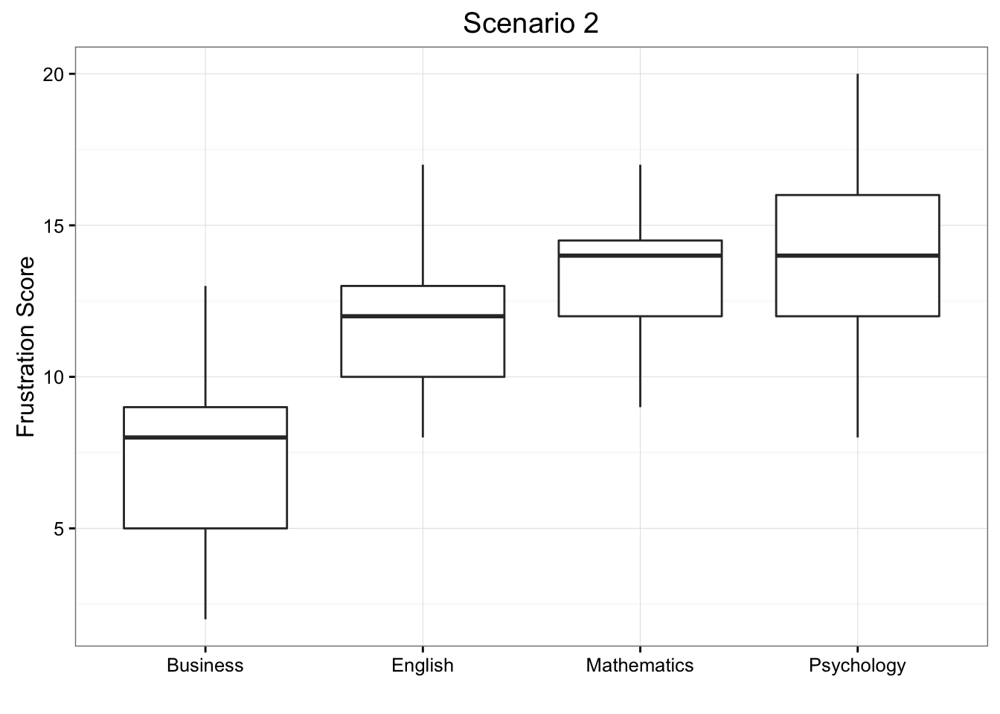
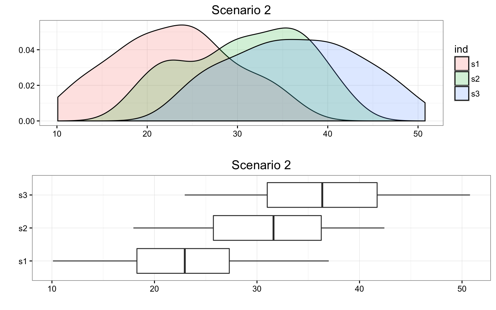
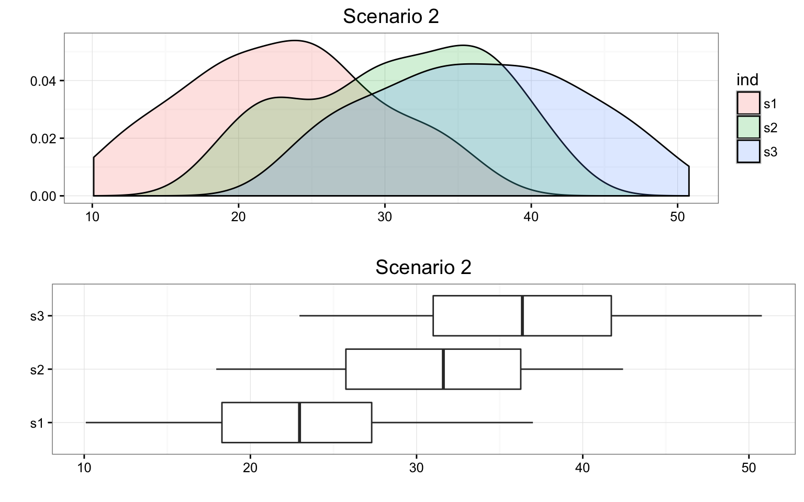
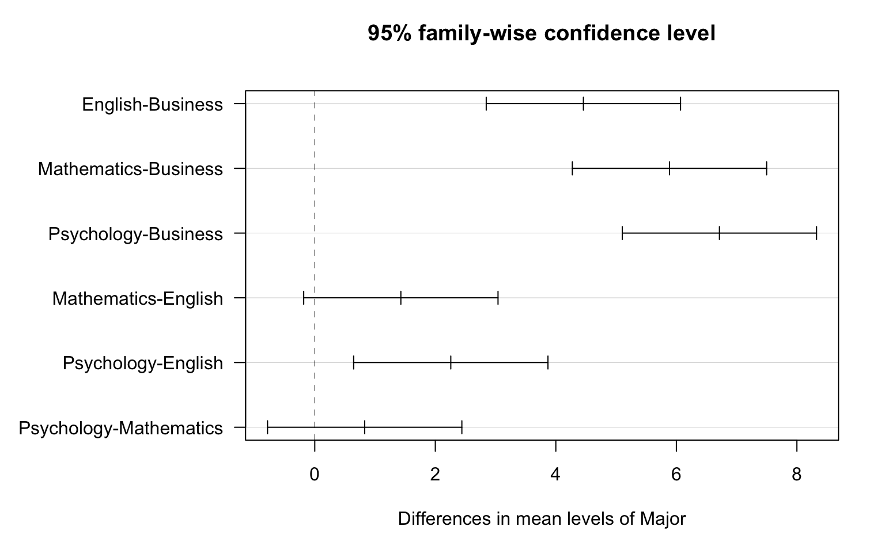

11.2 The Idea Behind the ANOVA F-Test
Let’s think about how we would go about testing whether the population means \(\mu_1, \mu_2,\mu_3,\mu_4\) are equal. It seems as if the best we could do is to calculate their point estimates—the sample mean in each of our 4 samples (denote them by \(\bar{x}_1,\bar{x}_2,\bar{x}_3,\bar{x}_4)\),
and see how far apart these sample means are, or, in other words, measure the variation between the sample means. If we find that the four sample means are not all close together, we’ll say that we have evidence against \(H_0\), and otherwise, if they are close together, we’ll say that we do not have evidence against \(H_0\). This seems quite simple, but is this enough? Let’s see.
It turns out that:
library(PDS)
MEANS <- with(data = frustration,
tapply(Frustration.Score, Major, mean)
)
MEANS Business English Mathematics Psychology
7.314286 11.771429 13.200000 14.028571 summary(aov(Frustration.Score ~ Major, data = frustration)) Df Sum Sq Mean Sq F value Pr(>F)
Major 3 939.9 313.28 46.6 <2e-16 ***
Residuals 136 914.3 6.72
---
Signif. codes: 0 '***' 0.001 '**' 0.01 '*' 0.05 '.' 0.1 ' ' 1- The sample mean frustration score of the 35 business majors is: \(\bar{x}_1 = 7.3142857\)
- The sample mean frustration score of the 35 English majors is: \(\bar{x}_2 = 11.7714286\)
- The sample mean frustration score of the 35 mathematics majors is: \(\bar{x}_3 = 13.2\)
- The sample mean frustration score of the 35 psychology majors is: \(\bar{x}_4 = 14.0285714\)
We present two possible scenarios for our example (different data). In both cases, we construct side-by-side box plots (showing the distribution of the data including the range, lowest and highest values, the mean, etc.) four groups of frustration levels that have the same variation among their means. Thus, Scenario #1 and Scenario #2 (the actual values from frustration) both show data for four groups with the sample means 7.3142857, 11.7714286, 13.2, and 14.0285714.

Review 11.2 Multiple Choice
Look carefully at the graphs of both scenarios. For which of the two scenarios would you be willing to believe that samples have been taken from four groups which have the same population means?
A. Scenario 1
B. Scenario 2
The important difference between the two scenarios is that the first represents data with a large amount of variation within each of the four groups; the second represents data with a small amount of variation within each of the four groups.
Scenario 1, because of the large amount of spread within the groups, shows box plots with plenty of overlap. One could imagine the data arising from 4 random samples taken from 4 populations, all having the same mean of about 11 or 12. The first group of values may have been a bit on the low side, and the other three a bit on the high side, but such differences could conceivably have come about by chance. This would be the case if the null hypothesis, claiming equal population means, were true. Scenario 2, because of the small amount of spread within the groups, shows boxplots with very little overlap. It would be very hard to believe that we are sampling from four groups that have equal population means. This would be the case if the null hypothesis, claiming equal population means, were false.
Thus, in the language of hypothesis tests, we would say that if the data were configured as they are in scenario 1, we would not reject the null hypothesis that population mean frustration levels were equal for the four majors. If the data were configured as they are in scenario 2, we would reject the null hypothesis, and we would conclude that mean frustration levels differ depending on major.
Let’s summarize what we learned from this. The question we need to answer is: Are the differences among the sample means (\(\bar{x}\)’s) due to true differences among the \(\mu\)’s (alternative hypothesis), or merely due to sampling variability (null hypothesis)?
In order to answer this question using our data, we obviously need to look at the variation among the sample means, but this alone is not enough. We need to look at the variation among the sample means relative to the variation within the groups. In other words, we need to look at the quantity:
\[\frac{\text{VARIATION AMONG SAMPLE MEANS}}{\text{VARIATION WITHIN GROUPS}}\]
which measures to what extent the difference among the sampled groups’ means dominates over the usual variation within sampled groups (which reflects differences in individuals that are typical in random samples).
When the variation within groups is large (like in scenario 1), the variation (differences) among the sample means could become negligible and the data provide very little evidence against \(H_0\). When the variation within groups is small (like in scenario 2), the variation among the sample means dominates over it, and the data have stronger evidence against \(H_0\). Looking at this ratio of variations is the idea behind the comparison of means; hence the name analysis of variance (ANOVA).
Did I Get This?
Consider the following generic situation:

where we’re testing:
\(H_0: \mu_1 = \mu_2 = \mu_3\) versus \(H_a:\mu_i \neq \mu_j\) for some \(i,j\) or not all \(\mu\)’s are equal.
The following are two possible scenarios of the data (note in both scenarios the sample means are 24.9386037, 30.0584293, and 35.285865).
 

Consider the frustration Data Frame Again
ggplot(data = frustration, aes(x = Major, y = Frustration.Score)) +
geom_boxplot() +
theme_bw() +
labs(y = "Frustration Score", x = "", title = "Frustration Score by Major")
RES <- summary(aov(Frustration.Score ~ Major, data = frustration))
RES Df Sum Sq Mean Sq F value Pr(>F)
Major 3 939.9 313.28 46.6 <2e-16 ***
Residuals 136 914.3 6.72
---
Signif. codes: 0 '***' 0.001 '**' 0.01 '*' 0.05 '.' 0.1 ' ' 1Note that the F-statistic is 46.6008958, which is very large, indicating that the data provide evidence against \(H_0\) (we can also see that the p-value is so small (\(8.8415737\times 10^{-21}\)) that it is essentially 0, which supports that conclusion as well).